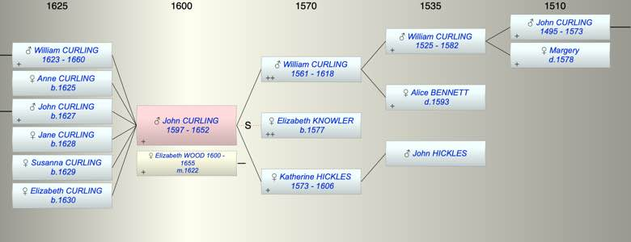

| [Index] |
| John (1) CURLING (1597 - 1652) |
|  |
| b. 1597 at St Peters |
| m. 1622 Elizabeth WOOD (1600 - 1655) |
| d. 1652 at St Laurence aged 55 |
| Parents: |
| William CURLING (1561 - 1618) |
| Katherine HICKLES (1573 - 1606) |
| Siblings (5): |
| Mary CURLING (1598 - ) |
| Susan CURLING (1600 - ) |
| Anne CURLING (1603 - ) |
| William CURLING (1609 - ) |
| William CURLING (1610 - ) |
| Children (6): |
| William (II) CURLING (1623 - 1660) |
| Anne CURLING (1625 - ) |
| John CURLING (1627 - ) |
| Jane CURLING (1628 - ) |
| Susanna CURLING (1629 - ) |
| Elizabeth CURLING (1630 - ) |
| Events in John (1) CURLING (1597 - 1652)'s life | |||||
| Date | Age | Event | Place | Notes | Src |
| 1597 | John (1) CURLING was born | St Peters | Note 1 | ||
| abt 1606 | 9 | Death of mother Katherine HICKLES (aged 33) | |||
| 1618 | 21 | Death of father William CURLING (aged 57) | Note 2 | ||
| 1622 | 25 | Married Elizabeth WOOD (aged 22) | Note 3 | ||
| 1623 | 26 | Birth of son William (II) CURLING | St Laurence | Note 4 | |
| 1625 | 28 | Birth of daughter Anne CURLING | St Lawrence | Note 5 | |
| 1627 | 30 | Birth of son John CURLING | St Laurence | bap St Laurence 25 Nov 1627 | |
| 1628 | 31 | Birth of daughter Jane CURLING | St Lawrence | Note 6 | |
| 1629 | 32 | Birth of daughter Susanna CURLING | St Laurence | Note 7 | |
| 1630 | 33 | Birth of daughter Elizabeth CURLING | St Laurence | Note 8 | |
| 1652 | 55 | John (1) CURLING died | St Laurence | Note 9 | |
| Personal Notes: |
|
Will of John Curling downloaded from Ancestry Prob/11/230 Image Reference:67 Made 20/10/1652, proved 8/6/1653
In the name of God Amen On the three and twentieth day of October in the yeare of our Lord one thousand sixe hundred fiftie two I John Curlinge of the parish of St Lawrence in the Isle of Thanet and County of Kent yeoman being sick in bodie but of good and perfect memory (God be praised) doo make and ordayne this my last will and Testament in manner and forme following ffirst I bequeath my soule into the hande of Allmighty God who gave it mee and my bodie to the Earth to be buried in the Churchyard of St Lawrence aforesayde nigh to the palme tree there Item I give onto the poore thirty shillings (that is to saye) Tenn shillings onto the poore within the liberty of Romansgate and twenty shillins onto the poore in the parish to be paid onto them within one moneth after my decease according to the discretion of the Churchwardens and overseers Item All the residue of my goods chattels and household stuffs whatsoever after my debts be paid and funeral expences discharged I give onto Elizabeth my now wife whome I make Executrix of this my last will and Testament in witness whereof I have hereonto sett my hand and seale in the presence of these whose names are underwritten John Curlinge ... [?] George Longe sen John Ebere [?] This Will was proved at Westminster the eighth day of Jun [?] in the yeare of our Lorde God one thousand sixe hundred fiftie three before the Judges for probate of wills and graunting of Administrations according to an Act of Parliament entituled an Act for probate of wills and graunting of Administrations by the Oath of Elizabeth Curlinge Widdow the Relicte of the sayd deceased and sole Executrix therein named To whome Administration of all and singular the goods Chattels and debts of the sayd deceased which any manner of way concerne the same will was graunted and Committed shee being first legally sworne well and faithfully to Administer the same./Ex~ WIll of John Curling PROB 11/220/834 made 23 Oct 1652 proved 8 June? 1653 Yeoman of St Laurence in Thanet to be buried in the churchyard at St Laurence Thirty shillings to the poor of Romansgate His goods and chattles to his 'now' wife Elizabeth who was to be executrix witnesses George Longe senior and John Evers |
| Created on a Mac™ using iFamily for Mac™ on 8 Oct 2023 |